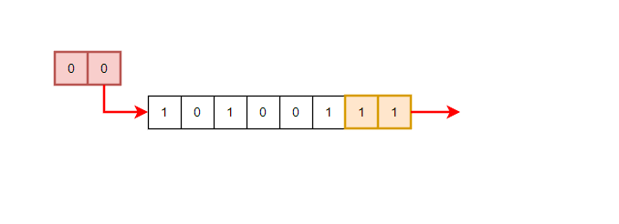
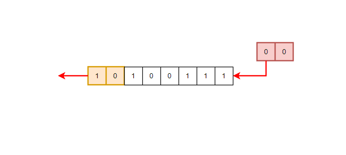
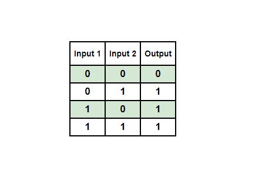
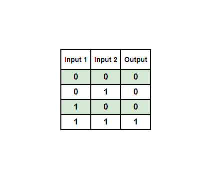
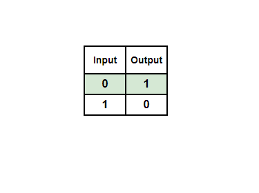

模块 04 - 编程基础
模块 04 - 编程基础
目标
- 熟悉 C 结构体
- 了解按引用传递和按值传递之间的区别
介绍
本课程要求具备 C 语言的基础知识作为前提。因此，有一些概念将因其在本课程中的重要性而被提及。
结构体
结构或结构体是用户定义的数据类型，允许程序员将不同数据类型的相关数据项组合成一个单一的单位。结构体可以用于存储与特定对象相关的数据。结构体有助于以易于访问和操作的方式组织大量相关数据。结构体中的每个项称为“成员”或“元素”，在课程中这些术语可以互换使用。
在使用 Windows API 时，常见的情况是某些 API 要求输入一个已填充的结构，而其他则会接收一个声明的结构并进行填充。以下是 THREADENTRY32 结构的一个示例，此时不必理解成员的用途。
typedef struct tagTHREADENTRY32 {
DWORD dwSize;
DWORD cntUsage;
DWORD th32ThreadID;
DWORD th32OwnerProcessID;
LONG tpBasePri;
LONG tpDeltaPri;
DWORD dwFlags;
} THREADENTRY32;
定义结构体
在本课程中使用的结构通常通过使用 typedef 关键字来声明，以便为结构赋予一个别名。例如，下面的结构是以名称 _STRUCTURE_NAME 创建的，但 typedef 添加了两个其他名称， STRUCTURE_NAME 和 *PSTRUCTURE_NAME 。
STRUCTURE_NAME 别名指的是结构名称，而 PSTRUCTURE_NAME 代表指向该结构的指针。微软通常使用 P 前缀来表示指针类型。
结构体的初始化
初始化结构体的方式将根据是否初始化实际的结构体类型或结构体的指针而有所不同。继续之前的例子，使用 _STRUCTURE_NAME 或 STRUCTURE_NAME 初始化结构体是相同的，如下所示。
STRUCTURE_NAME struct1 = { 0 }; // '{ 0 }' 部分表示初始化 struct1 的所有元素
_STRUCTURE_NAME struct2 = { 0 }; // '{ 0 }' 部分表示初始化 struct2 的所有元素
在初始化结构指针时，这个是不同的， PSTRUCTURE_NAME 。
结构体成员的初始化和访问
结构体的成员可以通过结构体本身或指向结构体的指针直接初始化。在下面的示例中，结构体 struct1 有两个成员，ID 和 Age，它们通过点运算符 (.)，直接初始化。
typedef struct _STRUCTURE_NAME {
int ID;
int Age;
} STRUCTURE_NAME, *PSTRUCTURE_NAME;
STRUCTURE_NAME struct1 = { 0 }; // 初始化 struct1 的所有元素为零
struct1.ID = 1470; // 初始化 ID 元素
struct1.Age = 34; // 初始化 Age 元素
另一种初始化成员的方法是使用指定初始化器语法，在这种语法中，可以指定要初始化的结构的哪些成员。
typedef struct _STRUCTURE_NAME {
int ID;
int Age;
} STRUCTURE_NAME, *PSTRUCTURE_NAME;
STRUCTURE_NAME struct1 = { .ID = 1470, .Age = 34}; // 初始化 ID 和 Age 元素
另一方面，通过指针访问和初始化结构是通过箭头运算符（ -> ）完成的。
typedef struct _STRUCTURE_NAME {
int ID;
int Age;
} STRUCTURE_NAME, *PSTRUCTURE_NAME;
STRUCTURE_NAME struct1 = { .ID = 1470, .Age = 34};
PSTRUCTURE_NAME structpointer = &struct1; // 结构体指针指向 'struct1' 结构体
// 更新 ID 成员
structpointer->ID = 8765;
printf("The structure's ID member is now : %d \n", structpointer->ID);
箭头运算符可以转换为点格式。例如， structpointer->ID 等价于 (*structpointer).ID 。也就是说， structurepointer 被解引用后直接访问。
值传递
值传递是一种将参数传递给函数的方法，其中参数是对象值的副本。这意味着当通过值传递参数时，对象的值被复制，函数只能修改其对象值的本地副本，而不能修改原始对象本身。
int add(int a, int b)
{
int result = a + b;
return result;
}
int main()
{
int x = 5;
int y = 10;
int sum = add(x, y); // x 和 y 变量仅值被传递
return 0;
}
通过引用传递
通过引用传递是一种向函数传递参数的方法，其中参数是指向对象的指针，而不是对象值的副本。这意味着当通过引用传递参数时，传递的是对象的内存地址，而不是对象的值。然后，函数可以直接访问和修改对象，而无需创建对象的本地副本。
void add(int *a, int *b, int *result)
{
int A = *a; // A 现在与主函数传递来的 a 具有相同作用
int B = *b; // B 现在与主函数传递来的 b 具有相同作用
*result = B + A;
}
int main()
{
int x = 5;
int y = 10;
int sum = 0;
add(&x, &y, &sum);
// 'sum' 得到结果是 15
return 0;
}
枚举类型
enum（枚举）是一种数据类型，用于定义一组具名常量。要创建枚举，可以使用 enum 关键字，后跟枚举名称和标识符列表，每个标识符都代表一个具名常量。编译器会自动为常量赋值，从 0 开始，每个后续常量增加 1。在本课程中，枚举可以用来表示特定数据的状态、错误代码或返回值。
枚举的一个示例是“星期”列表，其中包含 7 个常量。在下面的示例中，星期一的值为 0，星期二的值为 1，以此类推。需要注意的是，枚举列表不能使用点 (.) 运算符修改或访问。相反，每个元素都通过其具名常量值直接访问。
enum Weekdays {
Monday, // 0
Tuesday, // 1
Wednesday, // 2
Thursday, // 3
Friday, // 4
Saturday, // 5
Sunday // 6
};
// 定义一个 "Weekdays" 枚举变量
enum Weekdays EnumName = Friday; // 4
// 检查 "EnumName" 的值
switch (EnumName){
case Monday:
printf("今天是星期一！\n");
break;
case Tuesday:
printf("今天是星期二！\n");
break;
case Wednesday:
printf("今天是星期三！\n");
break;
case Thursday:
printf("今天是星期四！\n");
break;
case Friday:
printf("今天是星期五！\n");
break;
case Saturday:
printf("今天是星期六！\n");
break;
case Sunday:
printf("今天是星期日！\n");
break;
default:
break;
}
共用体
在 C 编程语言中，union 是一个允许在同一内存位置存储不同数据类型的数据类型。共用体提供了一种有效的方式，可以使用单个内存位置来实现多种用途。共用体并不常用，但是可以在 Windows 定义的结构中看到。以下代码演示了如何在 C 中定义一个共用体：
ExampleUnion 可以在同一内存位置存储 char、int 和 float 数据类型。要在 C 中访问共用体的成员，可以使用点运算符，类似于用于访问结构的运算符。
需要注意，在共用体中，给任何成员分配一个新值，也会更改所有其他成员的值，因为它们共享同一内存位置来存储数据。此外，为共用体分配的内存等于其最大成员的大小。
位运算符
位运算符是对二进制值的各个位进行操作的运算符，对每个对应的位位置执行操作。以下是位运算符：
- 右移 (
>>) - 左移 (
<<) - 位或 (
|) - 位与 (
&) - 位异或 (
^) - 位非 (
~)
右移和左移
右移（>>）和左移（<<）运算符用于将二进制数字的各位向右或向左移动指定位数。
向右移运算会丢弃最右边指定数量的位，并在左边插入相同数量的零。例如，下图显示了 10100111 右移 2 位后变成 00101001 的过程。

另一方面，向左移运算会丢弃最左边的位，并在右边插入相同数量的零。例如，下图显示了 10100111 左移 2 位后变成 10011100 的过程。

位或运算
位或运算是一种逻辑运算，针对二进制值进行按位运算。它对第一个操作数的每一位与第二个操作数的对应位进行评估，生成一个新的二进制值。新二进制值在任何位位置包含一个 1，其中原始值中相应位的其中一个或两个都是 1。
下表表示具有所有可能输入位的按位 OR 输出。

按位AND
按位AND操作是一种逻辑运算，针对两个二进制数值的位级进行运算。此操作仅当两个输入操作数的对应位都为1时，才将新二进制数值的相应位设为1。
下表显示了按位AND输出以及所有可能的输入位。

按位异或
按位异或运算（也称为互斥或）是一种逻辑运算，在比特级涉及两个二进制值。如果只有其中一位为 1，则每一位的结果都是 1。另一方面，如果两个位都是 0 或 1，则输出为 0。
下表表示所有可能的输入比特的按位异或输出。

按位取反
按位取反运算接收一个二进制数，并翻转其所有位。换句话说，它将所有 0 转换为 1，所有 1 转换为 0。下表展示了按位取反输出与所有可能的输入位。
